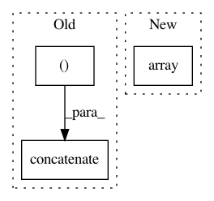

cddf39be59c3c1231d2d4fd3b9bfc10a21e63780,imblearn/under_sampling/prototype_generation/cluster_centroids.py,ClusterCentroids,_sample,#ClusterCentroids#Any#Any#,107
Before Change
axis=0)
else:
X_resampled = np.concatenate(
(X_resampled, X[y == target_class]), axis=0)
y_resampled = np.concatenate(
(y_resampled, y[y == target_class]), axis=0)
return X_resampled, y_resampled
After Change
X_resampled = np.vstack((X_resampled, safe_indexing(X, idx_under)))
y_resampled = np.hstack((y_resampled, safe_indexing(y, idx_under)))
return X_resampled, np.array(y_resampled)
In pattern: SUPERPATTERN
Frequency: 3
Non-data size: 3
Instances
Project Name: scikit-learn-contrib/imbalanced-learn
Commit Name: cddf39be59c3c1231d2d4fd3b9bfc10a21e63780
Time: 2017-08-24
Author: g.lemaitre58@gmail.com
File Name: imblearn/under_sampling/prototype_generation/cluster_centroids.py
Class Name: ClusterCentroids
Method Name: _sample
Project Name: librosa/librosa
Commit Name: 538f969f17ef232c75588dfa2a3157bd97aae45d
Time: 2013-02-11
Author: brm2132@columbia.edu
File Name: librosa/beat.py
Class Name:
Method Name: _beat_tracker
Project Name: IndicoDataSolutions/finetune
Commit Name: 04573605a3bef45d29d81302bce154f220bbd7f5
Time: 2019-01-15
Author: matthew.bayer@indico.io
File Name: finetune/target_encoders.py
Class Name: OrdinalRegressionEncoder
Method Name: rank_to_thresholds
Project Name: scikit-learn-contrib/imbalanced-learn
Commit Name: cddf39be59c3c1231d2d4fd3b9bfc10a21e63780
Time: 2017-08-24
Author: g.lemaitre58@gmail.com
File Name: imblearn/under_sampling/prototype_generation/cluster_centroids.py
Class Name: ClusterCentroids
Method Name: _sample